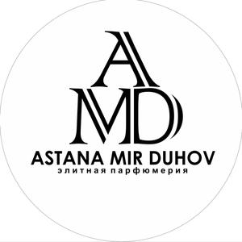
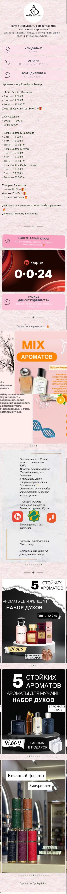

Концепт редизайна

Трафик из Instagram видит сайт так же красиво — видео, наборы, заказ в WhatsApp.
Бутик селективной парфюмерии · Астана
Включите запись экрана, разверните окно на весь экран (F11) и нажмите кнопку. После отсчёта 3-2-1 начнётся минута презентации. Клавиша R — начать заново.